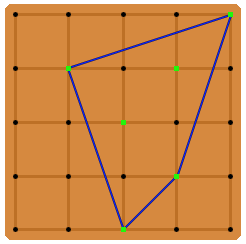

A geoboard (of order $N$) is a square board with equally-spaced pins protruding from the surface, representing an integer point lattice for coordinates $0 \le x, y \le N$.
John begins with a pinless geoboard. Each position on the board is a hole that can be filled with a pin. John decides to generate a random integer between $1$ and $N+1$ (inclusive) for each hole in the geoboard. If the random integer is equal to $1$ for a given hole, then a pin is placed in that hole.
After John is finished generating numbers for all $(N+1)^2$ holes and placing any/all corresponding pins, he wraps a tight rubberband around the entire group of pins protruding from the board. Let $S$ represent the shape that is formed. $S$ can also be defined as the smallest convex shape that contains all the pins.

The above image depicts a sample layout for $N = 4$. The green markers indicate positions where pins have been placed, and the blue lines collectively represent the rubberband. For this particular arrangement, $S$ has an area of $6$. If there are fewer than three pins on the board (or if all pins are collinear), $S$ can be assumed to have zero area.
Let $E(N)$ be the expected area of $S$ given a geoboard of order $N$. For example, $E(1) = 0.18750$, $E(2) = 0.94335$, and $E(10) = 55.03013$ when rounded to five decimal places each.
Calculate $E(100)$ rounded to five decimal places.
solve(n=1) → ?solve(n=100) → ?